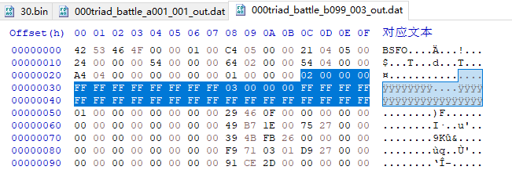

Mission
全部BSFO记录在 0xF7B91DE7
BSFO是控制加载画面的信息，包括玩家的机体图片，地方的机体图片
30.bin 是第一关000triad_battle_a001_001
控制友方机体id
控制时间
这个区域控制BOSS是index多少，比如02就是boss
{kind=link}

主boss

双boss


路线颜色


93 3b 3f 52是地图
任务持续时间

0xA073DA71 sceneidtable
全部街机模式的fhm2d名称
街机第一关
000triad_battle_a001_001 0x67AF23FA
000triad_battle_c005_002
F-01 0x6D6A2AE3
MSC
sys_0(0x40e, 0xfe67f4f9); 地图
0xfe67f4f9 サイド7 / side7
3E9FBD53 ミンスリー / age的殖民地
6539CBF8 メーティス
C5BDA687 ギアナ高地
08BEAE86 廃棄コロニー（地球周辺） / 雷霆宙域
641E2846 ランタオ島
04620C93 ニュー・ホンコン
F2BB56EC 丘隆地帯
5EE38886 アーモリー・ワン
2B18FA06 ニュータイプ研究所
A4E661EC トリントン基地周辺
3E9FBD53
32431F46 アクシズ
A83AC3F9 ギガフロート
68C28A53 REBIRTH
C846E72C 農業プラント
523F3B93 丘陵地帯
C49A4539 キャピタル・テリトリィ
4B64DED3 アフリカ砂漠
9232a61d training
global0 我方cost
global1 敌方cost
global17 BGM
0xe5bb68aa vstg_battle_0330 高达AGE
生成敌人
player 2架 + 12架正常机体就极限了


func_21(0x2);
sys_0(0x336, 0x2);
func_22(); 一定要call
两个现需要同时有，0x2也就是index
参考这个

这个可以一直生成，最大8台，游戏自动计算
sys_0(0x324, sys_0(0x212, 0x2), 0x1)
sys_0(
arg1, // 0x400 (1024)
arg2, // 0x2 (2) index
arg3, // 0
arg4, // 733026001 机体ID
arg5, // 0x1 (1) Team 敌方0x1，我方0
arg6, // 0 主要目标 0x1
arg7, // 0 主要目标 0x1
arg8, // 0
arg9, // 0
arg10, // 0
arg11, // 0x1 (1)
arg12, // 0
arg13, // 0
arg14, // 0x63 (99)
arg15, // 0
arg16, // 0x1 (1)
arg17, // 0
arg18, // 0x1 (1)
arg19, // 0
arg20, // 0
arg21, // 0
arg22, // 0x2 (2)
arg23, // 0x8 (8)
arg24, // 0x64 (100)
arg25, // 0x64 (100)
arg26, // 0x64 (100)
arg27, // 0
arg28, // 0
arg29, // 0
arg30, // 0
arg31, // 0
arg32, // 0
arg33, // 0
arg34, // 0
arg35, // 0
arg36, // -800 位置坐标 X
arg37, // 0xa0 (160) 位置坐标 Y
arg38, // 200 位置坐标 Z
arg39, // 0x2 (2) 0是不动，1是面向跑，2是往面向飞 3飞一下 4翻身
arg40, // 0x50 (80) 面向角度
arg41, // 0x3c (60) 初始动作持续时间 e.g一直飞行
arg42, // 0
arg43, // 0
arg44, // 0
arg45, // 0
arg46, // 0
arg47, // 0
arg48, // 0
arg49, // 0
arg50, // 0
arg51, // 0
arg52 // 0
);
上面友方和敌方都能生成
如果换成这个就只能生成敌方
func_9();
func_12(0x2);